编译运行
Redis
下载解压
下载地址
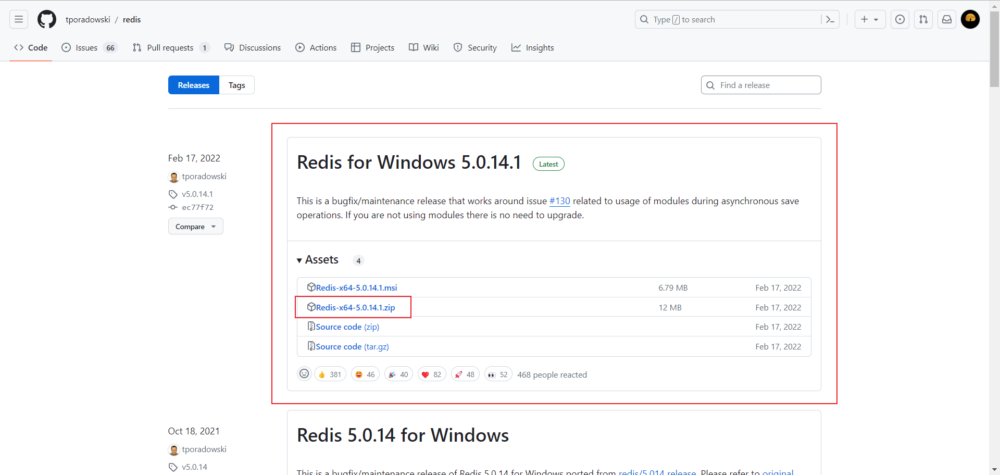
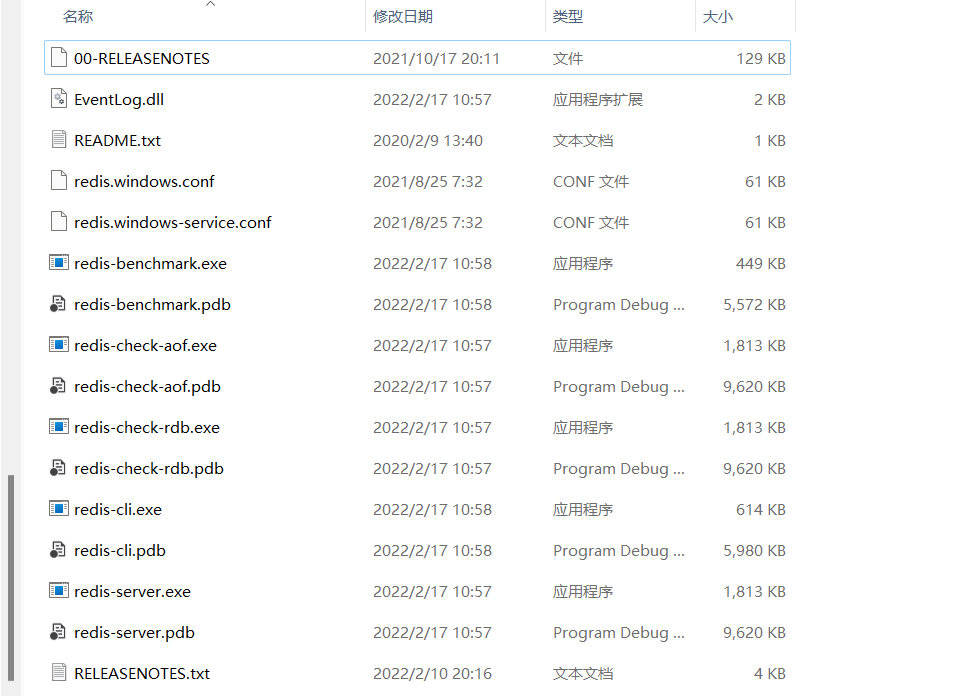
查看配置
1
| redis-server.exe redis.windows.conf
|
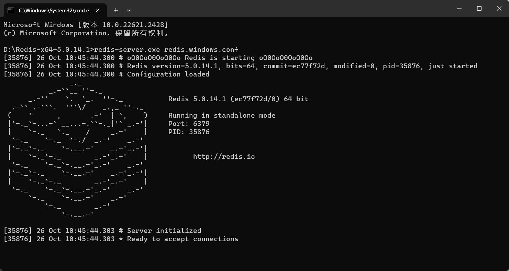
配置 redis IP 地址及端口号
1
| redis.hosts = 127.0.0.1:6379
|
项目下载
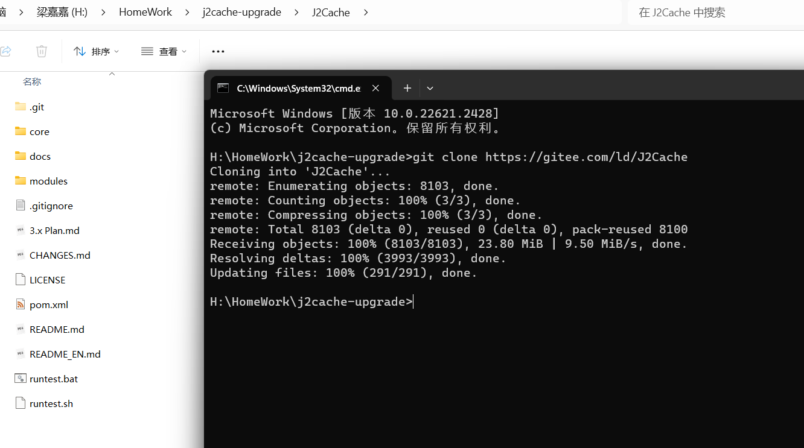
项目编译
1
| mvn package -DskipTests=true
|
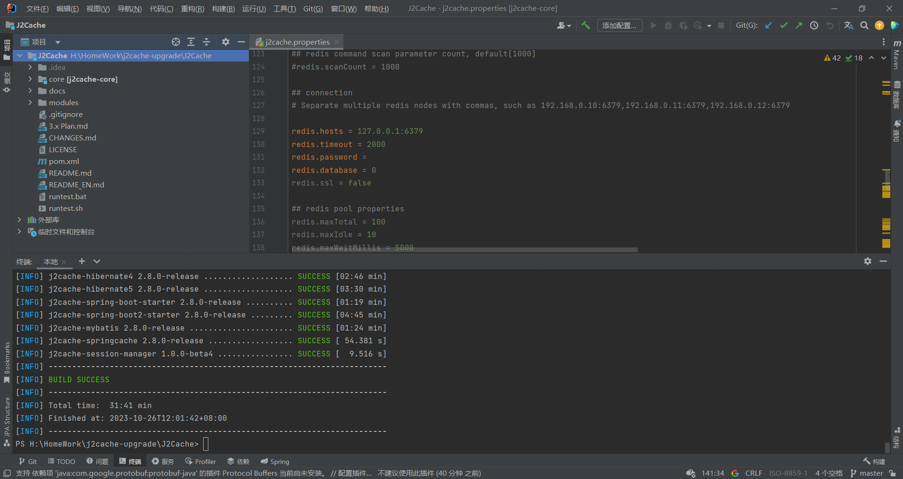
项目运行
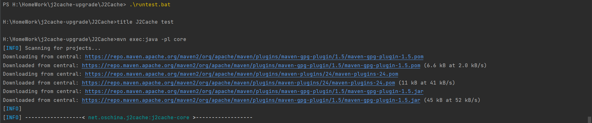
出现报错，缺少相关依赖（J2Cache\core\pom.xml）
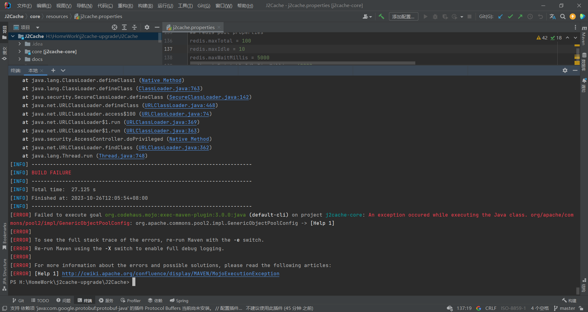
下面是更新后的pom.xml(j2cahce-core)文件：增加commons-pool2的依赖项。
1
2
3
4
5
| <dependency>
<groupId>org.apache.commons</groupId>
<artifactId>commons-pool2</artifactId>
<version>2.11.1</version>
</dependency>
|
重新加载：
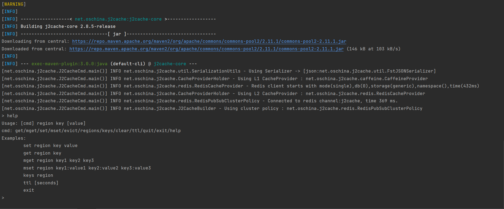
运行测试：
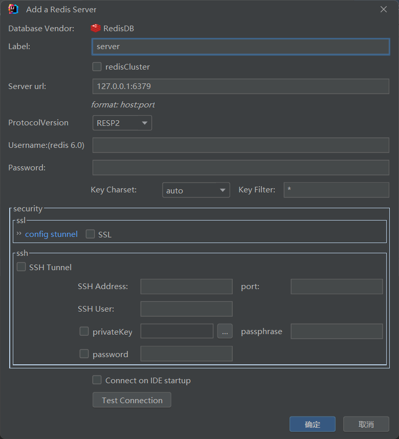
升级改造
JDK
JDK8⇒JDK17
下面是更新后的pom.xml(j2cahce)文件：需要在<build>元素内的<plugins>部分中添加maven-compiler-plugin插件配置，同时修改<properties>元素中的project.build.sourceEncoding属性。
1
2
3
4
5
6
7
8
9
10
11
12
13
14
15
16
17
18
19
20
21
22
23
24
25
26
27
28
29
30
31
32
33
34
35
36
37
38
39
40
41
42
43
44
45
46
47
48
49
50
| <project xmlns="http://maven.apache.org/POM/4.0.0" xmlns:xsi="http://www.w3.org/2001/XMLSchema-instance"
xsi:schemaLocation="http://maven.apache.org/POM/4.0.0 http://maven.apache.org/xsd/maven-4.0.0.xsd">
<modelVersion>4.0.0</modelVersion>
<groupId>net.oschina.j2cache</groupId>
<artifactId>j2cache</artifactId>
<version>2.8.0-release</version>
<packaging>pom</packaging>
<name>j2cache</name>
<description>J2Cache is a 2 level Cache system, Using ehcache + redis</description>
<url>https://gitee.com/ld/J2Cache</url>
<licenses>
<license>
<name>The Apache Software License, Version 2.0</name>
<url>http://www.apache.org/licenses/LICENSE-2.0.txt</url>
</license>
</licenses>
<properties>
<project.build.sourceEncoding>UTF-8</project.build.sourceEncoding>
<maven.compiler.source>17</maven.compiler.source>
<maven.compiler.target>17</maven.compiler.target>
</properties>
<build>
<plugins>
<plugin>
<groupId>org.apache.maven.plugins</groupId>
<artifactId>maven-compiler-plugin</artifactId>
<version>3.8.1</version>
<configuration>
<source>${maven.compiler.source}</source>
<target>${maven.compiler.target}</target>
<encoding>${project.build.sourceEncoding}</encoding>
</configuration>
</plugin>
</plugins>
</build>
</project>
|
构建项目时，显示无法解析符号 ‘Generated’
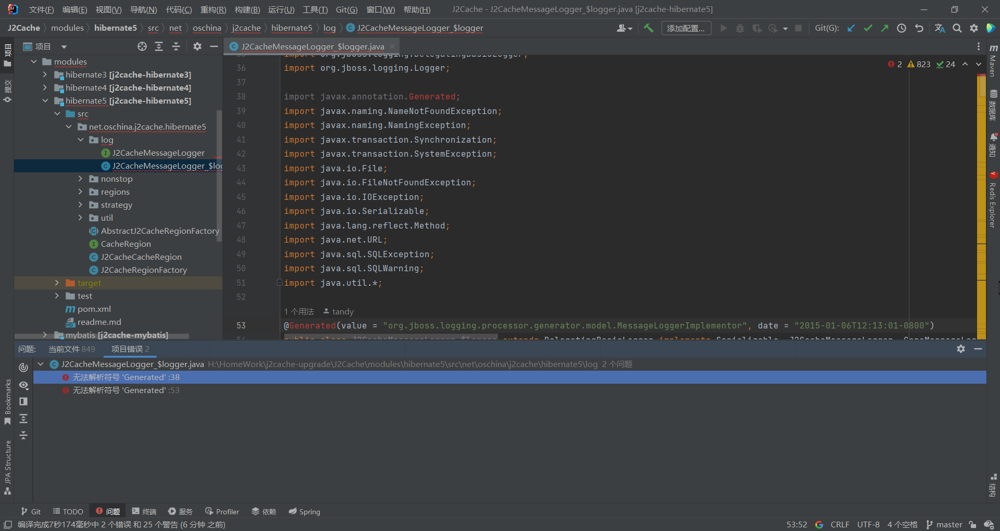
原因是在 Java 11 中引入 JEP 320: Remove the Java EE and CORBA Modules 提案，移除了 Java EE and CORBA 的模块，如果项目中用到需要手动引入。（代码中用到了 javax.annotation.* 下的包）
下面是更新后的pom.xml(j2cahce-hibernate5,j2cahce-hibernate4)文件：增加javax.annotation的依赖项。
1
2
3
4
5
| <dependency>
<groupId>javax.annotation</groupId>
<artifactId>javax.annotation-api</artifactId>
<version>1.3.2</version>
</dependency>
|
Fastjson
fastjson 2.0.41发布
下面是更新后的pom.xml(j2cahce-core)文件：更新fastjson的依赖项。
1
2
3
4
5
6
7
8
9
10
11
| <dependency>
<groupId>com.alibaba.fastjson2</groupId>
<artifactId>fastjson2</artifactId>
<version>2.0.41</version>
</dependency>
<dependency>
<groupId>com.alibaba.fastjson2</groupId>
<artifactId>fastjson2-extension</artifactId>
<version>2.0.41</version>
</dependency>
|
提示报错：
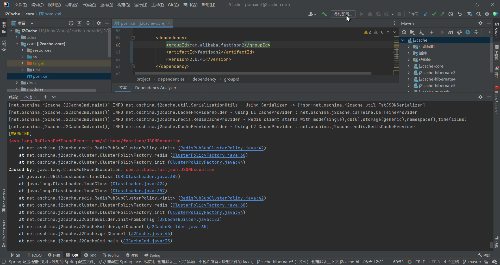
[4.3. 常见的类扩展升级映射](https://github.com/alibaba/fastjson2/wiki/fastjson_1_upgrade_cn#43-常见的类扩展升级映射)
| fastjson1 |
fastjson2 |
| com.alibaba.fastjson.parser.ParserConfig |
com.alibaba.fastjson2.reader.ObjectReaderProvider |
| com.alibaba.fastjson.parser.deserializer.ExtraProcessor |
com.alibaba.fastjson2.filter.ExtraProcessor |
| com.alibaba.fastjson.parser.deserializer.ObjectDeserializer |
com.alibaba.fastjson2.reader.ObjectReader |
| com.alibaba.fastjson.serializer.AfterFilter |
com.alibaba.fastjson2.filter.AfterFilter |
| com.alibaba.fastjson.serializer.BeforeFilter |
com.alibaba.fastjson2.filter.BeforeFilter |
| com.alibaba.fastjson.serializer.ContextValueFilter |
com.alibaba.fastjson2.filter.ContextValueFilter |
| com.alibaba.fastjson.serializer.LabelFilter |
com.alibaba.fastjson2.filter.LabelFilter |
| com.alibaba.fastjson.serializer.NameFilter |
com.alibaba.fastjson2.filter.NameFilter |
| com.alibaba.fastjson.serializer.PascalNameFilter |
com.alibaba.fastjson2.filter.PascalNameFilter |
| com.alibaba.fastjson.serializer.PropertyFilter |
com.alibaba.fastjson2.filter.PropertyFilter |
| com.alibaba.fastjson.serializer.ObjectSerializer |
com.alibaba.fastjson2.writer.ObjectWriter |
| com.alibaba.fastjson.serializer.SerializeConfig |
com.alibaba.fastjson2.writer.ObjectWriterProvider |
| com.alibaba.fastjson.serializer.ToStringSerializer |
com.alibaba.fastjson2.writer.ObjectWriterImplToString |
| com.alibaba.fastjson.serializer.ValueFilter |
com.alibaba.fastjson2.filter.ValueFilter |
| com.alibaba.fastjson.serializer.SerializerFeature |
com.alibaba.fastjson2.JSONReader.Feature |
| com.alibaba.fastjson.parser.Feature |
com.alibaba.fastjson2.JSONWriter.Feature |
进行原有方法的单元测试：运行/调试配置中加入：VM 参数
1
2
3
4
5
6
| --add-opens java.base/java.lang=ALL-UNNAMED
--add-opens java.base/java.math=ALL-UNNAMED
--add-opens java.base/java.net=ALL-UNNAMED
--add-opens java.base/java.text=ALL-UNNAMED
--add-opens java.base/java.util=ALL-UNNAMED
--add-opens java.base/java.util.concurrent=ALL-UNNAMED
|
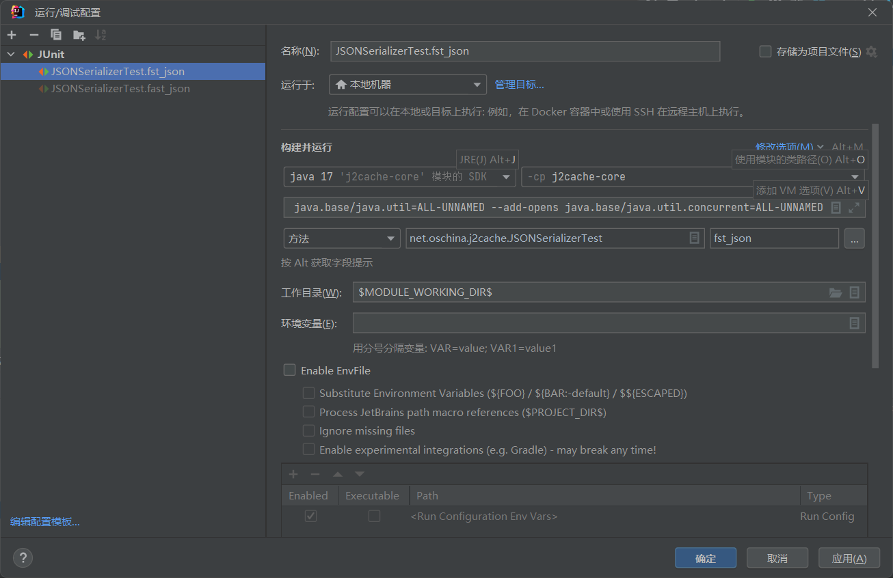
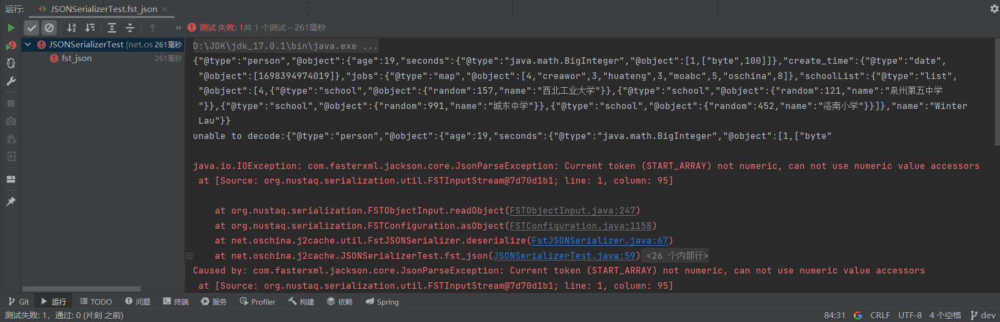
[报错提示](https://gitee.com/ld/J2Cache/issues/I4U0BO)
1
| --add-opens java.base/java.math=ALL-UNNAMED
|
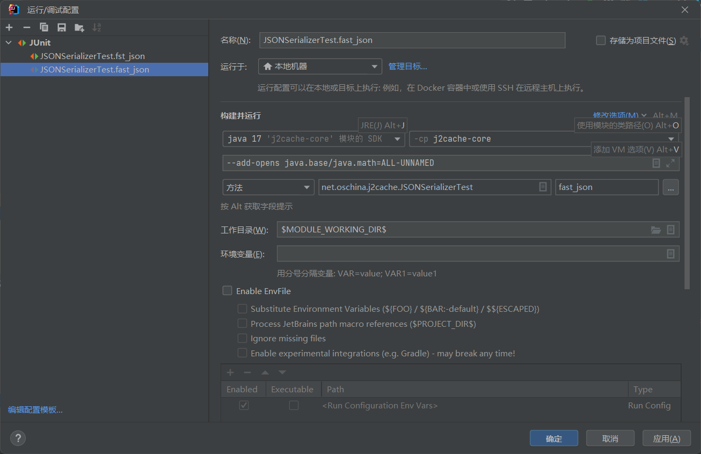
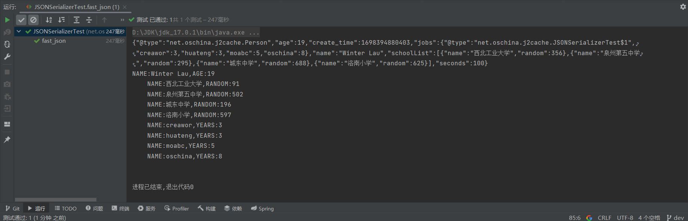
需要修改的地方：
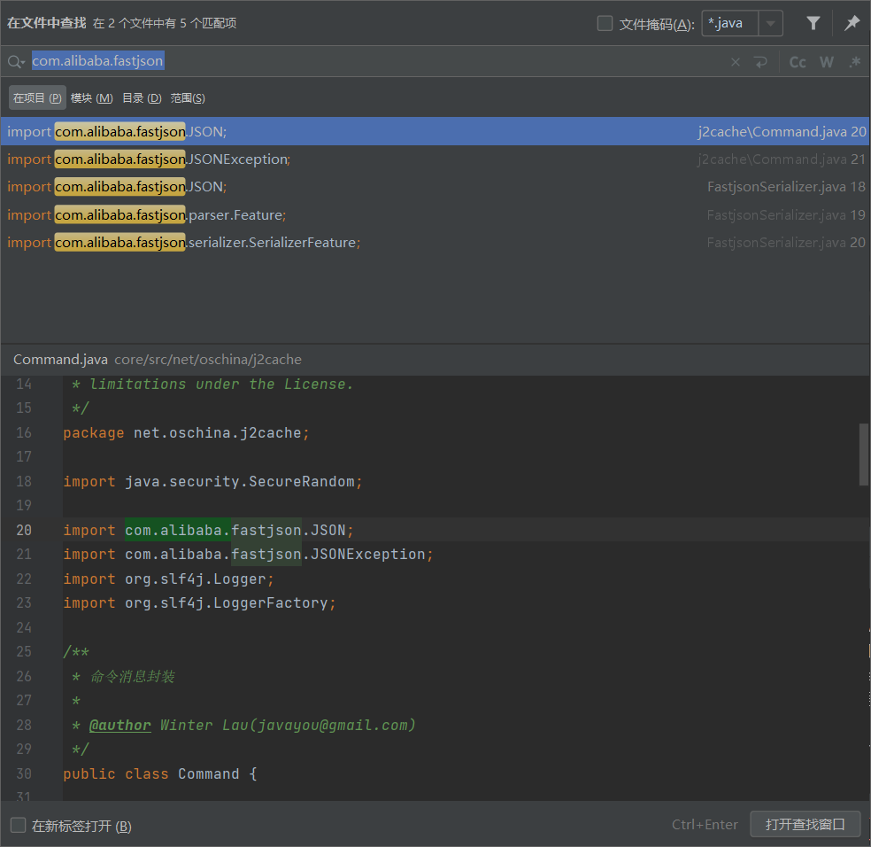
对应 $\text {API}$ 进行修改。
Redis
需要修改的文件：
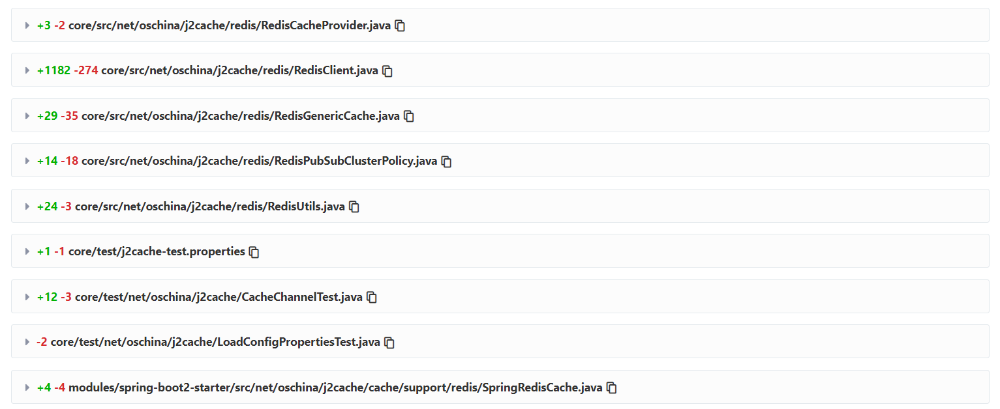
SpringBoot3
拷贝 spring-boot2-starter 模块新命名为 spring-boot3-starter
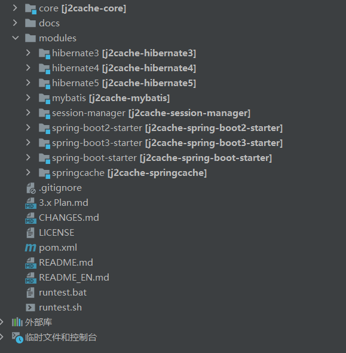
下面是更新后的pom.xml(spring-boot3-starter)文件：修改spring-boot-dependencies的版本。
1
2
3
| <properties>
<spring-boot-dependencies.version>3.0.0</spring-boot-dependencies.version>
</properties>
|
下面是更新后的pom.xml(j2cache-core)文件：增加子模块spring-boot3-starter的版本。
1
2
3
4
5
6
7
8
9
10
11
12
| <modules>
<module>core</module>
<module>modules/hibernate3</module>
<module>modules/hibernate4</module>
<module>modules/hibernate5</module>
<module>modules/spring-boot-starter</module>
<module>modules/spring-boot2-starter</module>
<module>modules/spring-boot3-starter</module>
<module>modules/mybatis</module>
<module>modules/springcache</module>
<module>modules/session-manager</module>
</modules>
|
项目打包成 jar
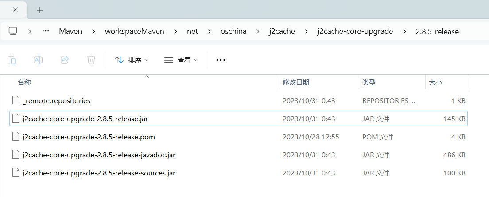
# 用例测试
-
新建SpringBoot3项目
-
添加依赖
1
2
3
4
5
6
7
8
9
10
11
12
13
14
15
16
17
18
19
20
21
22
23
24
25
26
27
28
29
30
31
32
33
34
35
36
37
38
39
40
41
42
43
44
45
46
47
48
49
50
| <?xml version="1.0" encoding="UTF-8"?>
<project xmlns="http://maven.apache.org/POM/4.0.0" xmlns:xsi="http://www.w3.org/2001/XMLSchema-instance"
xsi:schemaLocation="http://maven.apache.org/POM/4.0.0 https://maven.apache.org/xsd/maven-4.0.0.xsd">
<modelVersion>4.0.0</modelVersion>
<parent>
<groupId>org.springframework.boot</groupId>
<artifactId>spring-boot-starter-parent</artifactId>
<version>3.1.5</version>
<relativePath/>
</parent>
<groupId>com.bjtu.cs</groupId>
<artifactId>demo-j2cache-core-upgrad</artifactId>
<version>0.0.1-SNAPSHOT</version>
<properties>
<java.version>17</java.version>
</properties>
<dependencies>
<dependency>
<groupId>net.oschina.j2cache</groupId>
<artifactId>j2cache-core-upgrade</artifactId>
<version>2.8.5-release</version>
</dependency>
<dependency>
<groupId>org.springframework.boot</groupId>
<artifactId>spring-boot-starter-web</artifactId>
</dependency>
<dependency>
<groupId>org.springframework.boot</groupId>
<artifactId>spring-boot-starter-test</artifactId>
<scope>test</scope>
</dependency>
</dependencies>
<build>
<plugins>
<plugin>
<groupId>org.springframework.boot</groupId>
<artifactId>spring-boot-maven-plugin</artifactId>
<configuration>
<excludes>
<exclude>
<groupId>org.projectlombok</groupId>
<artifactId>lombok</artifactId>
</exclude>
</excludes>
</configuration>
</plugin>
</plugins>
</build>
</project>
|
- 添加配置文件
caffeine.properties
j2cache.properties
可以直接从 j2cache-upgrade\core\resources中复制来
- 主函数测试
1
2
3
4
5
6
7
8
9
10
11
12
13
14
15
16
17
| package com.bjtu.cs;
import net.oschina.j2cache.CacheChannel;
import net.oschina.j2cache.J2Cache;
import org.springframework.boot.autoconfigure.SpringBootApplication;
@SpringBootApplication
public class Application {
public static void main(String[] args) {
CacheChannel cache = J2Cache.getChannel();
cache.set("default", "1", "Hello J2Cache");
System.out.println(cache.get("default", "1"));
cache.evict("default", "1");
System.out.println(cache.get("default", "1"));
cache.close();
}
}
|
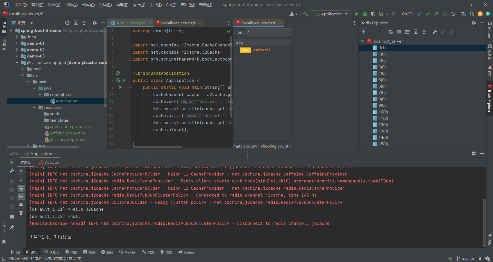
编译并运行查看结果，观察控制台输出，以及本地 redis server 记录，成功写入！